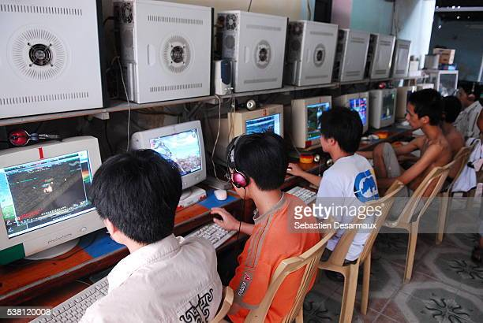

Introduction
Jelly Generator is a web application where players can assemble their own cup of jelly with given tools and materials. This whimsical yet bizarre game is inspired from Vietnamese dessert “Chè” and 2000s Internet Cafe culture. The act of moving chè from physical environment to online space resembles the scattering of the young generation’s connection after the Internet boom of 1997 in Vietnam.
Concept and Background Research
This project is inspired by Vietnamese Internet Cafe culture in the beginning of the Internet in the 2000s, and a Vietnamese dessert called “chè". The correlation between the two will be specified later.
Internet cafes (also known as "net cafes") were a popular gathering spot for young people in the late 1990s and early 2000s [1]. At that time, home internet access was not yet widespread, so internet cafes provided a convenient and affordable way for people to get online. In addition to providing a space for people to connect with each other and with the online world, internet cafes also played an important role in the development of Vietnam's gaming culture. Many gamers in Vietnam got their start playing popular online games like Gunbound or Audition at these cafes [2]. Although the popularity of internet cafes has declined in recent years due to the increasing availability of home internet access and mobile devices, they still hold a special place in the memories of many Vietnamese people who grew up during that time.
Besides good games with high production values, simple and addictive games are also designed to engage users and keep them coming back for more. Games like Feeding Frenzy and Gold Digging may not have the same level of complexity or polish as bigger games, but they make up for it with their addictive gameplay and easy-to-learn mechanics . There’s one particular game that struck my mind was this nose hair plucking game, despite its seemingly trivial nature, it can be surprisingly compelling. The satisfaction of plucking a nose hair and seeing the timer tick down can be strangely satisfying, and players may find themselves playing for hours on end without even realizing it. The simple nature and interaction of this game are the main inspiration for my piece.
“Chè" is a sweet dessert that is sold on the street or in a small local market of Vietnam [4]. Back in the day, I always catched chè sellers outside of internet cafes, waiting for people to hop out of their little online world after hours, thirsty and hungry. Chè are often made with a number of different condiments (ranging from jelly, mung bean, or tubers, etc.) pulling everything together in one bowl of goodness.
It's interesting to think about the contrast between the traditional act of making and enjoying Chè and the more solitary experience of using an internet cafe. While Chè is typically enjoyed with friends or family, gathered around a bowl and sharing in the sweetness of the dish, internet cafes often involve sitting alone in front of a computer screen. And yet the two are often spotted together, side by side. Both Chè and internet cafes involve the act of adding something to our lives - whether it's the delicious flavors of different condiments in a bowl of Chè or the wealth of information and connection that comes from being online. However, there is a fundamental difference in the way these two experiences are structured. Chè encourages social connection and the enjoyment of a shared experience, whereas internet cafes can sometimes feel isolated and disconnected from the world around us. Despite this, both Chè and internet cafes have played important roles in the cultural landscape of Vietnam, and have helped shape the way people interact with each other and with technology.
With Jelly Generator, I provide a fun tool that allows users to assemble their own virtual bowl of chè, by adding the ingredients and materials that are provided. The more you add, the more bizarre and wicked creatures are added to the bowls, resembling a waste of time and how gnarly our world has become by bridging the gap between reality and the online space, highlighting the juxtaposition of the making process of chè, and the culture of Internet Cafe.
This web piece is also inspired by several fun and weird interactive websites like whoruthishalloween [5] and the work of Yehwan Song [6].
Technical Implementation
In this project, I mainly work on Three.js for the 3D part and manage the interaction using html and css. Three.js is a JavaScript library used for creating 3D graphics and animations in web browsers [7]. It provides a high-level API for working with WebGL, a low-level graphics API that allows for hardware-accelerated rendering of 3D graphics in the browser. With Three.js, developers can create 3D scenes, add lights and cameras, and import 3D models and textures. The library also provides built-in support for a variety of 3D formats, including OBJ, STL, and FBX (I use GLTF for this particular project).
- 1st attempt: I have in mind a game where I can interact with a 3D object, specifically draw something on top of the existing object when clicked, similar to how sculpt tools in Blender work. So I started out by importing a 3D model (in this case one of a woman, I don’t know why, I just have it ready, so..) which is the main object I was going to interact with using gltfLoader in Three.js to load a 3D model. After that I add a mouse click event where I create a sphere (at a random position) whenever the click action is triggered.
- 2nd attempt: Next I calculated the interaction between my mouse position (x, y coordinate) and the main object, then copied that position and assigned it to the sphere drawing event. I ended up having almost like a sculpt brush in Blender. The sphere would stick to the surface of the main model.
>
- 3rd attempt: I then add a debug button in the index.html file and use that button to change the color of the main model to a random color. This debug button serves as a mvp version of all the buttons I was adding later.
- 4th attempt: Next, I changed the main model to a one of a jello (to get a feeling of how things are gonna look like), change the brush so that it draws a 3D model instead of a sphere and add more buttons.
- 5th attempt: In order to change the content of the brush (from one 3D object to another), I put the button’s click event inside the mouse click event. I used to do it vice versa and it costs a lot of memory and the objects that are drawn out tend to randomly be assigned to different models.
- 6th attempt: Netx up, I start doing the modeling in blender and import them into the Three.js sketch, at the same time experiment with button styles.
- 7th attempt: The hardest part for me was probably working with web layout in css. Making sure the web is responsive and the Three.js sketch can work on top of the html buttons are a challenge.
- 8th attempt: After all the elements are added, I delete the Debug panel and upload it online so everyone can experiment with the game.

* Several images of the results:

Reflection and Future Development
This project is very close to my heart since it is inspired by my favorite dessert and childhood events in the blooming internet era of the 2000s. I had massive fun and was giggling all the way making it. This piece was lighthearted and a refreshment to all the heavy headed projects that I usually make.
What went well I had a pretty clear vision of what I wanted to achieve which drastically made it easier to execute the piece. I had little to no knowledge about Three.js before this project but the materials that Simon Bruno and Three js Journey provided were resourceful enough for the scale of my project [8]. As usual I tried to aim small by only focusing on one interaction which is clicking, and the rest fluently follows.
What I learned My main strategy for everything is to implement new knowledge into time-constraints projects. That way, it helps me learn faster and pushes me out of my comfort zone, in this case it was Three.js. I also learned (for a million times) that aiming small is always a good start and it opens up possibilities for further developments.
Next Iteration After this I plan to keep polishing the web to improve web performance by adding mouse click/ mouse hover effects, adding more elements and improving the code. I also want to embark on a journey of making fun interactive web pages based on trivial things as a way to destress and bring back the spirit of small fun brainless internet games.
References
- [1]“A Brief History of the Internet in Vietnam on Its 20th Birthday,” Saigoneer. [Online] . Available: https://saigoneer.com/saigon-technology/11831-a-brief-history-of-the-internet-in-vietnam-on-its-20th-birthday
- [2].”8 Childhood Online Games Vietnamese Millennials Grew Up Playing After School Instead Of Doing Homework” [Online]. Available: https://thesmartlocal.com/vietnam/vietnamese-childhood-online-games/
- [3] “CHÈ,” Wikipedia, 29-Apr-2023. [Online]. Available: https://en.wikipedia.org/wiki/Ch%C3%A8. [Accessed: 01-May-2023].
- [4] “Whoruthishalloween,” WhoRUThisHalloween. [Online]. Available: https://whoruthishalloween.xyz/". [Accessed: 01-May-2023].
- [5] Yehwan Song. [Online]. Available: http://www.yhsong.com/. [Accessed: 01-May-2023].
- [6] Three.js, JavaScript 3D Library. [Online]. Available: https://threejs.org/. [Accessed: 01-May-2023].
- [7] “Learn webgl with three.js,” Three.js Journey. [Online]. Available: https://threejs-journey.com/?c=g1&gad=1. [Accessed: 01-May-2023].